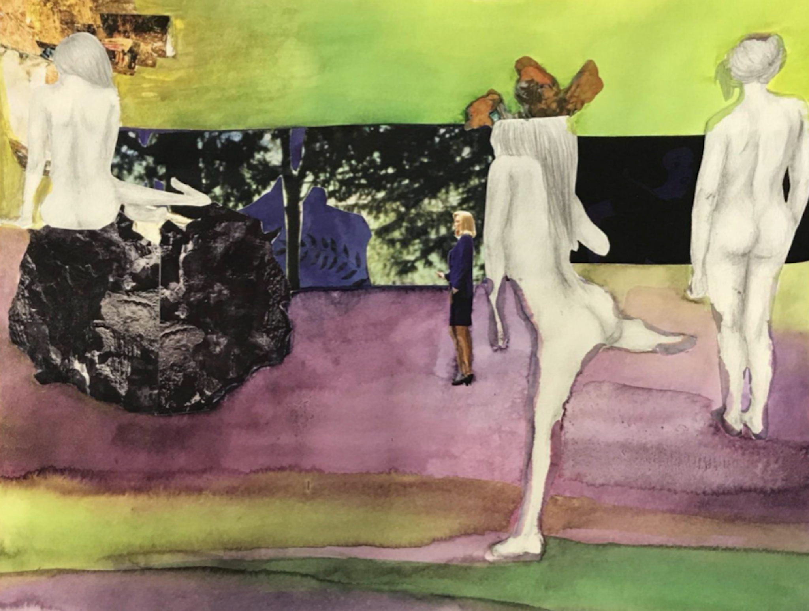

Game design is something I've been interested when I was young and even thought about pursuing. While I don't know if I see myself on that path anymore I think the UX for games is fascinating as it focuses even more on how to get users to do what you want. The most surprising thing I found out was about UI Positions and how the most easy to reach spots contain the most monetary forward decisions. I've found my self countless times accidentally tapping on the ads and getting annoyed at how it interrupts the game. Knowing that this is because they're purposely located in an area where you are meant to touch it feels like I found out about a secret I wasn't supposed to know.
A messy bedroom with clothes and things all over the floor isn't a unique look and we are always quick to think "God what a mess I have to clean this up." I think this concept is interesting because a mess tells a lot about a person and every item has some story behind it: what it is, how it got there, and why. If you had no context of me or this photo, you'd know that two of the garments I designed and sewn myself and it took my literal blood sweat and tears. This image shows the development of my style and my growing collection of clothing, accessories, and lip products to align with that. Espeically if we compare to how I've dressed before years and years before I didn't wear much colors and mostly stuck to blacks and greys. I've eventually grew to embrace more feminine styles and dress to make me happy.

Fig.2 - Baimeng's painting
The image is an abstract painting and there seems to be someone dancing and their head is exploding with either stress or creativity, some kind of strong emotion. All the other figures are in a more neutral and still stance. It feels like they are ignoring the main figure. The large strip in the back looks like a window, leading me to infer that this scene is happening indoors. Also very noticeably, the woman in the upper left corner is sitting on what seems to be a rock, but with the lack of a clear horizon line, is it a floating rock? She also seems to be in front of the fire. The colors are cool toned and muddy giving it an overall depressing feeling. There is also a smaller woman in the distance that is cut out and not drawn and is also dressed in business attire, contrasting the pencil drawn nude figures. She is perhaps an authority figure. The whole art work is quite mysterious and nothing is exactly straightforward.
Visual Thinking Strategies Research
When I hear visual thinking I have a vague idea of what someone could mean. I would say it's something along the lines of being a visual learner or working through your thoughts by drawing, making sketches, mind maps, etc. But I’m not sure I’ve ever heard the term visual thinking to describe what was explained as visual thinking strategies.
I find the strategies reminiscent of learning how to ask questions and learning to identify context clues and how to infer, which were skills taught to us in elementary school. I think some of these things we do subconsciously but being mindful and deliberate with analyzing and trying to understand what is going on is a good way to really stimulate our curiosity and minds. I think it’s even more important now that the world has become so oversaturated with media and we become desensitized to what we see and many people these days just mindlessly scroll and consume without thinking about what they are exposed to.
Mallard and Claret's design agency website has very striking color pallete and playful strong brand identiy. You are greeted with a unique layout and I was imediately drawn by the red curser and had a lot of fun when i found out how the ball will bounce and drop when you mouse coes off the top or bottom of the screen.
I never connected the fact that using a modal would save screen space as I always see it rather annoying since it's often poorly created. However, I was imediately reminded of how tutorials are often designed, with pop-ups providing directions and descriptions of various buttons and functions on a page, guiding users through tasks with overlaid instructions.
When implemented poorly, these pop-ups and overlays can be incredibly frustrating, especially when there isn't a clear way to exit them. It's reminiscent of the experience of dealing with a computer virus, where your screen is bombarded with countless pop-ups that refuse to close or disappear. If you've ever encountered such a situation, you'll understand the feeling of triggering a fight-or-flight response.
There is definetly a time an place for them and when done well it can be an effective way to save space, giving more creative freedom for designers and add to the user experience rather than take away.
Forms are so mundane, and constructing a nice form takes much more complexity than one may think. Salim Ansari’s Medium article, “Best Practices for Form Design,” gives 20 tips on how to improve the user experience of filling out online forms and sheds light on many issues I've been frustrated with before too. As Ansari calls out bad designs and how they make the user feel like giving up, it made me feel like my experiences were validated, and he gave solutions to those issues that I completely agree with. One of those is having the label at the top of the blank and not under. I can’t count the number of times I was confused about which empty box went with which label and then just filled it out hoping for the best. I also especially resonate with the note to be specific about what an error is instead of a vague “something went wrong”.
As an upcoming graduate, I’ve been looking at job listings and came across a UX Intern position at Tesla. I noted that their forms were simple and straightforward. The text boxes were well-spaced, and when you left a required field empty, they would highlight it in red with additional text to provide more information on what content needed to be added. Additionally, the optional sections were easily labeled with “(optional)” next to them.